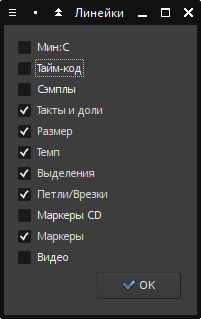
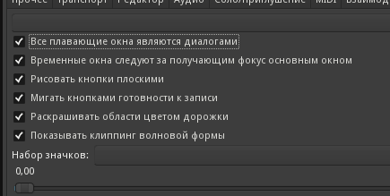
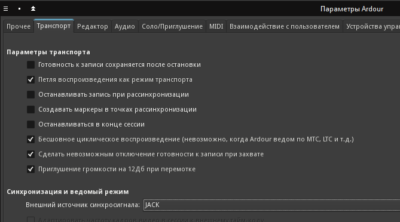
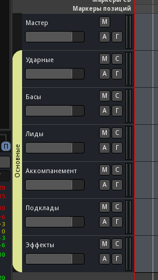
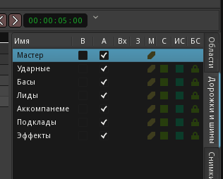

Вернёмся к Ardour (очень удобно использовать несколько рабочих столов, на одном из которых Claudia, на другом Ardour, на третьем Rosegarden и так далее). Хотя набор шин и дорожек будет меняться по мере развития композиции, для начала полезно создать несколько основных. Но сперва настроим отображение сессии в Ardour. По клику правой кнопкой на области названий линеек (Тайм-код, Размер, Темп и т.д.), вызовется диалог, в котором лучше выбрать настройки, как показано на рисунке. Далее, перейти в настройки темы Правка/Параметры/Тема и настроить, как на следующем рисунке. Наконец, удостовериться, что в параметрах транспорта внешним источником синхронизации выбран JACK.
  Теперь создадим несколько шин. Нам нужно разбить будущий звуковой материал на группы, поэтому создадим шесть основных шин - для ударных, баса, ведущих партий, аккомпанемента, подкладов, и эффектов.
Дадим имена только что добавленным шинам. Дорожки переименовываются двойным щелчком на названии. В результате должно получиться, как показано на рисунке.
На самом деле, отображать дорожки шин в редакторе бессмысленно, они лишь захламляют экран и могут пригодиться только для автоматизации фейдера или параметров эффектов. Если такое понадобится, то ещё очень нескоро, поэтому пока скроем их в редакторе (они останутся видимыми в окне микшера). Нажимаем вкладку Дорожки и шины на панели справа и снимаем галочку в столбце B для всех шин. Мастер тоже можно скрыть.
Откроем окно микшера (Alt-M или Окно/Микшер). Нам надо направить выходы аудио с только что созданных шин на системную шину Мастер. С неё готовый смикшированный звук уже будет попадать на выход комнаты Claudia и следовать к выходу звуковой карты.
После этого диалог просто закрываем, и кнопка входов на линейке Мастер теперь показывает количество подключенных каналов (*12*). А кнопка выходов на линейке микшера каждой шины (в самом низу над кнопкой Комментарии) показывает к чему подключено - шину Мастер.